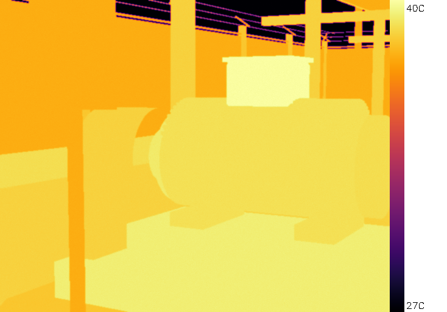
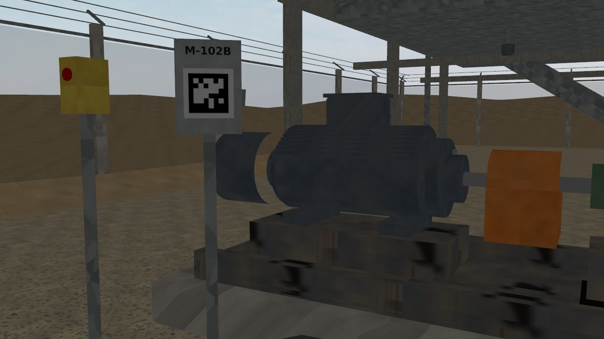
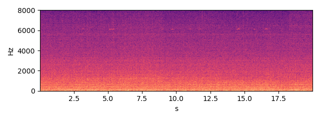
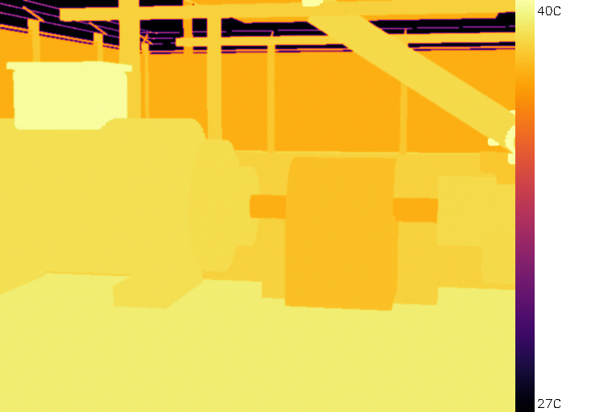
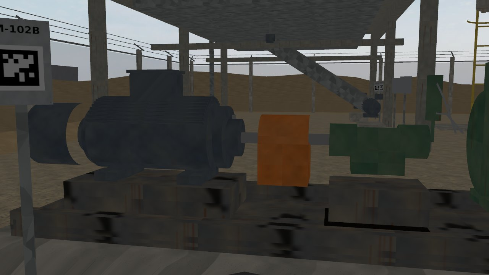
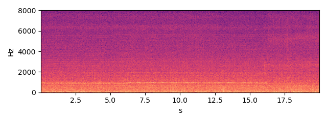

M-102B — TEFC induction motor, 2-pole, 50 Hz
Status none HI 0.92 RUL: not estimated (no degradation trend)
Health indicator per inspection round; vertical lines = maintenance log entries; red band = RUL estimate.
Inspection snapshots (robot camera and microphone)

thermal, aim 1, max 40.4 C (Gazebo round 2026-10-03 16:41)

RGB, aim 1

sound, aim 1 (dwell window)

thermal, aim 2, max 57.7 C (Gazebo round 2026-10-03 16:41)

RGB, aim 2

sound, aim 2 (dwell window)
Alarm history
| time | level | fused score | HI | reasons | work order |
|---|---|---|---|---|---|
| 2026-10-07 18:40 | warning | 8.3 | 1.0 | thermal_sibling | |
| 2026-10-20 12:05 | warning | 6.39 | 0.8652 | fused score |
Maintenance log (CMMS view)
| date | type | details |
|---|---|---|
| 2026-09-29 | greasing | {"part": "motor_nde_brg"} |
| 2026-10-13 | greasing | {"part": "motor_de_brg"} |